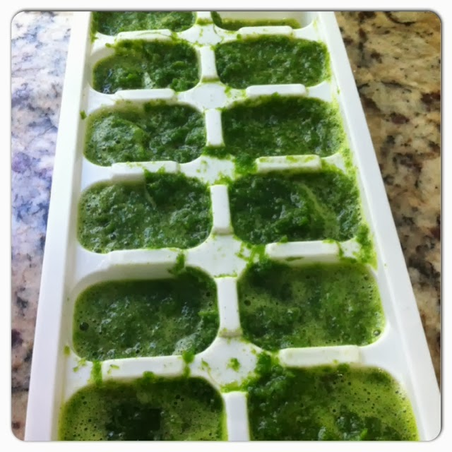
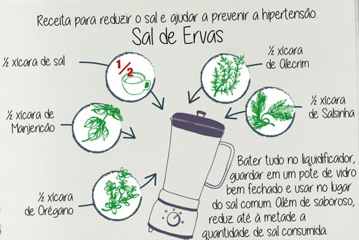

Com o objetivo de ensinar opções saudáveis para a alimentação, o Projeto todo ano realiza oficinas, por meio da Nutricionista Juliana Ramadas, com as espécies cultivadas na Horta e são destinadas aos alunos do campus. Assim como já ocorreram oficinas com alunos do campus Maracanã e com os responsáveis dos alunos de Maria da Graça. As receitas preparadas estão disponíveis abaixo.
SUCO VERDE DESINTOXICANTE
Ingredientes
1 folha de couve + 1 maçã média + 1 talo de erva doce + 1 punhado de salsinha e hortelã + suco de 1/2 limão + 200 ml de água.
Modo de preparo
Corte as maçãs ao meio e retire suas sementes, colocando no liquidificador com os demais ingredientes. Coe só se necessário.
SUCO VERDE DE COUVE COM MAÇÃ
Ingredientes
2 maçãs + 2 folhas de couve + ½ limão + 200 ml de água.
Modo de preparo
Corte as maçãs ao meio e retire suas sementes, colocando no liquidificador com os demais ingredientes. Coe só se necessário.
DICA
Para ter sempre a folha de couve na geladeira com os nutrientes preservados, faça gelinhos de couve e use-os aos poucos (duas unidades para um copo).
Passo 1
Lave um maço de couve (orgânica, de preferência) e retire o talo branco.
Passo 2
Passe as folhas no processador ou bata no liquidificador com 1/2 copo (100 ml) de água.
Passo 2
Distribua a couve triturada na forminha de gelo e leve ao freezer. Quando estiver firme, você pode armazenar os "gelinhos" num saquinho plástico.

SAL DE ERVAS
Ingredientes
½ xícara de sal + ½ xícara de manjericão + ½ xícara de orégano + ½ xícara de alecrim + ½ xícara de salsinha.
Modo de preparo
Bater tudo no liquidificador , guardar em um pote de vidro bem fechado e usar no lugar do sal comum.

OMELETE DE FOLHA DE ABÓBORA
Ingredientes
½ xícara de sal + ½ xícara de manjericão + ½ xícara de orégano + ½ xícara de alecrim + ½ xícara de salsinha.
Modo de preparo
Bater tudo no liquidificador , guardar em um pote de vidro bem fechado e usar no lugar do sal comum.
FAROFA DE FOLHA DE ABÓBORA
Ingredientes
½ xícara de sal + ½ xícara de manjericão + ½ xícara de orégano + ½ xícara de alecrim + ½ xícara de salsinha.
Modo de preparo
Bater tudo no liquidificador , guardar em um pote de vidro bem fechado e usar no lugar do sal comum.
Álbum de fotos
Oficina "Guisado, omelete e farofa: você já comeu folha de abóbora?” - 2019